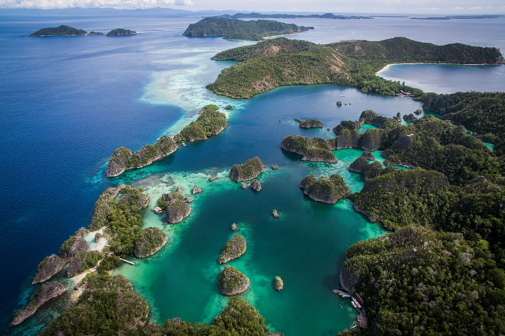
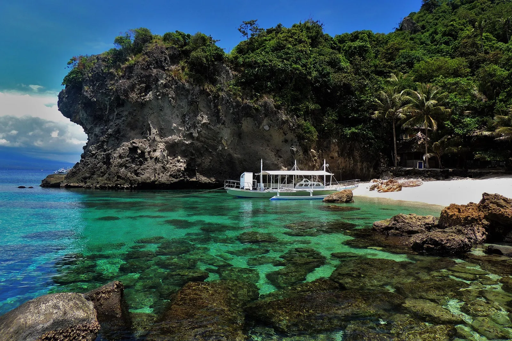
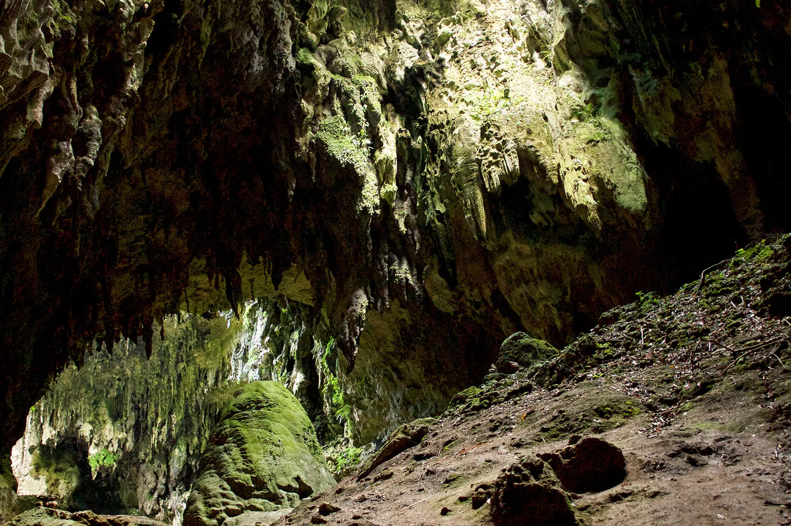
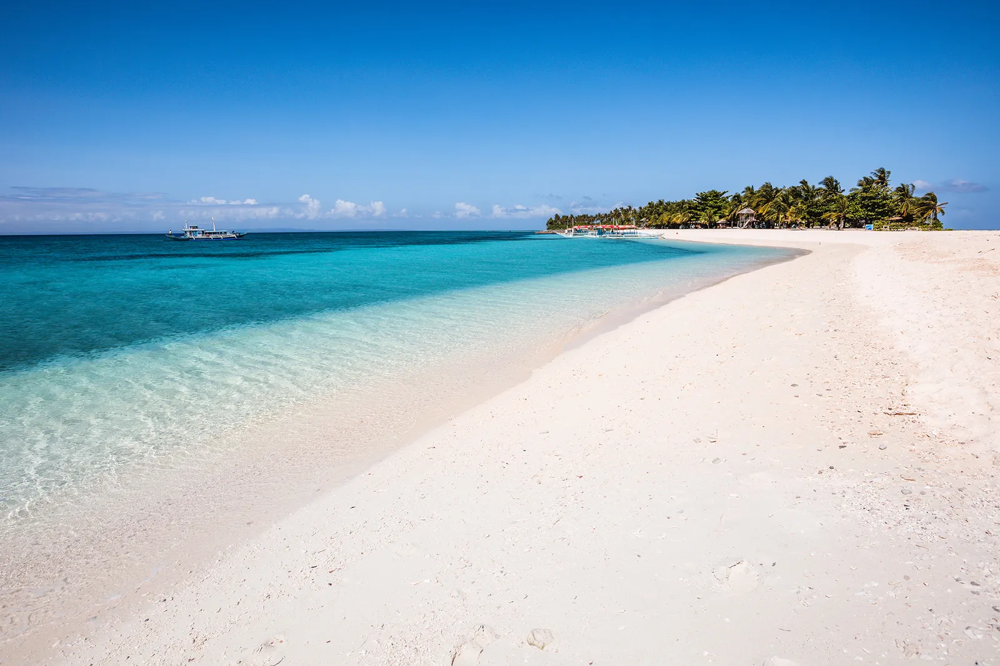

Explore the Beautiful Places in the Philippines
Explore the diverse and beautiful regions of the Philippines, each offering unique experiences and attractions.
Pangasinan
Best for Island Hopping
Pangasinan is known for its beautiful beaches and islands, perfect for island hopping adventures. Visit Hundred Islands National Park, explore the white sands of Patar Beach, and enjoy fresh seafood at local markets. The lesser-known province of Pangasinan remains a hidden gem for many travelers. Most visitors come to explore the Hundred Islands National Park, which is actually composed of 123 small limestone islets. Boats meander around these low-lying specks of land, offering a serene experience. Even fewer travelers venture to the deserted beaches accessible by boat from the quaint port town of Salomague. Snorkeling in this area is an excellent way to observe the giant clam population up close, a result of dedicated efforts by experts to repopulate the ecosystem over the years
Bicol
Best for Thrill Seekers

Bicol offers thrilling experiences with its active volcanoes and stunning landscapes. Hike up Mayon Volcano, surf the waves of Catanduanes, and indulge in spicy Bicolano cuisine. Whale sharks, the world's largest fish, are best observed in Bicol, the most adventurous region of the Philippines. The prime time for spotting and swimming with these majestic sea creatures is from January to May. Throughout the year, travelers flock to Bicol to witness its active volcanoes, particularly the famous Mount Mayon, while also uncovering eserted beaches and secluded bays.
Eastern Visayas
Best for Water Babies
Eastern Visayas is a haven for water lovers with its beautiful beaches, waterfalls, and marine life. Dive in the waters of Southern Leyte, visit the stunning Kalanggaman Island, and explore the majestic waterfalls of Samar. This region consists of three main islands—Samar, Leyte, and Biliran—where life revolves around the ocean. The surf scene dominates both the waves and the shores. Biliran is a lush island with rice terraces and sloping volcanoes inland, and a long, white-sand coastline dotted with smaller islands. Leyte attracts serious divers, while Samar’s surf breaks appeal to adventurous surfers seeking off-the-beaten-path thrills. The pink-sand bay of Sila is one of the country's most breathtaking beaches. Additionally, this area is one of the best-connected parts of the Philippines, making travel and exploration smooth and effortless.
Cagayan Valley
Best for Intrepid Explorers
Cagayan Valley is perfect for those seeking adventure and exploration. Discover the Callao Cave, navigate the Cagayan River, and explore the stunning landscapes of Batanes.The Cagayan Valley is a region rich with caves, churches, forests, and waterfalls. It is particularly renowned for its caves, including the Capisaan cave system, which is the fifth longest in the country, featuring over two and a half miles of underground tunnels for adventurous explorers to navigate. Some of these caves are surrounded by vast lakes, such as Odessa-Tumbali, where visitors can enjoy water sports in addition to exploring the more than seven miles of tunnels.
Siargao
Best for Sustainable Surf Scene
Environmentally-conscious travelers flock to Siargao, where daily life revolves around the region's natural marvels. This island, nestled like a teardrop in the middle of the ocean, is celebrated for its vibrant surf culture and relaxed pace of living away from the spotlight. Visitors are drawn by yoga retreats and enticing dining options, but they linger for the stunning white beaches and world-class surfing opportunities.
Western Visayas
Best for Big Name Beaches
The major attractions in the Philippines are famous for good reason, particularly Western Visayas, known for Boracay's stunning beaches and vibrant food scene. White Beach, with its appropriately named bright sand, is among the country's most visited spots. This region also serves as a gateway to Guimaras, although departing from Iloilo is quicker. Guimaras is a rural island where roads meander through mango fields and rice paddies, offering a tranquil alternative to Boracay's lively atmosphere for those seeking a more relaxed experience.